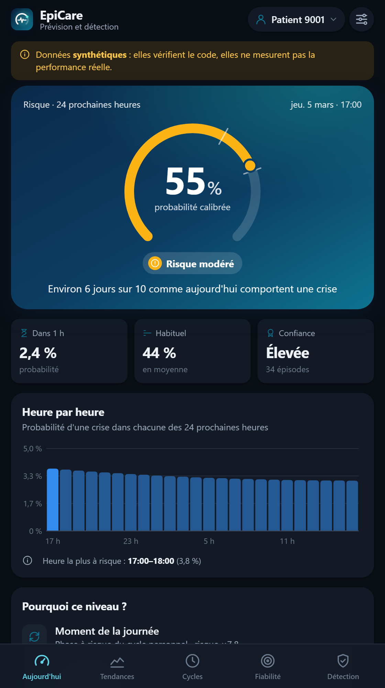

Les deux modèles sont codés et testés ; il manque toute la chaîne en direct. La Branche 1 (prévision du risque) et la Branche 2 (détection des crises convulsives) tournent de bout en bout, mais seulement sur données synthétiques pour l'instant. L'application affiche leurs résultats, sans recevoir de données en direct.
Pour finir le prototype, il reste quatre choses : la montre, le lien Bluetooth, la détection en direct sur le téléphone et l'alerte aux proches. Pendant ce temps, les vrais résultats des modèles se calculent sur ordinateur.
Vert : fait. Orange : codé mais pas encore sur les vraies données ou pas encore en direct. Rouge : pas commencé. Les données de la montre vont au téléphone, qui détecte la crise, lance le compte à rebours sur la montre puis alerte les proches. Les crises confirmées par le patient retournent dans la Branche 1.
| Pièce | État | Détail |
|---|---|---|
| Branche 1 · prévision du risque | Codé | Probabilité de crise sur 1 h et 24 h, cycles personnels, calibration. Testée sur données synthétiques ; l'archive réelle My Seizure Gauge n'est pas encore traitée sur ce PC. |
| Branche 2 · détection | Codé | Chaîne complète (lecture SeizeIT2, signal, modèles, décision, évaluation). Format réel vérifié. Données réelles en téléchargement. |
| Lien Branche 1 → Branche 2 | Fait | Le risque décale le seuil du détecteur, plafonné à ±1. Simulation du rapport (§7) et test au poignet sur les patients de la Branche 1. |
| Application · écrans de résultats | Fait | Aujourd'hui, Tendances, Cycles, Fiabilité, Détection. Tourne dans Expo Go, hors ligne. |
| Application · direct et alertes | À faire | Réception Bluetooth, détecteur en direct, compte à rebours, alerte aux proches, journal des crises, contacts. |
| Montre | À faire | Choix du matériel, programme de la montre (capteurs, Bluetooth, vibreur, bouton Annuler). |
| Enregistrements « gestes du quotidien » | À faire | Brossage de dents, applaudissements, course, bouteille, bus… au poignet. Le format CSV est prêt. |
Le dossier branch2/ suit l'organisation de branch1/ : un paquet Python, 10 tests automatiques et une ligne de commande.
| Étape (rapport §5) | Ce que fait le code |
|---|---|
| Données | Lecture de SeizeIT2 (BIDS, EDF) sans bibliothèque externe ; téléchargement direct depuis OpenNeuro, reprise automatique. |
| Signal | Rééchantillonnage à 32 Hz, norme, gravité retirée, fenêtres de 10 s avec 50 % de recouvrement ; fréquence cardiaque tirée de l'ECG. |
| Modèles | Référence : forêt aléatoire sur des descripteurs faits main (fréquence dominante, puissance 2–8 Hz, régularité, énergie, variation du cœur). Principal : petit réseau convolutif 1D, avec ou sans fréquence cardiaque, exportable vers la montre (ONNX). |
| Décision | Crise déclarée après 15–20 s de fenêtres positives d'affilée ; une alerte par épisode ; 3 alertes par heure au plus. |
| Évaluation | Découpage par patient, jamais par fenêtre ; seuil réglé uniquement sur les patients d'entraînement. Mesures : crises détectées, fausses alertes par jour, délai. |
| Fusion avec la Branche 1 | Le détecteur tourne sur le poignet (Empatica E4) des patients de la Branche 1, avec leur risque horaire comme prior. Résultats envoyés à l'onglet Détection de l'app. |
| Constat | Conséquence |
|---|---|
| 57 crises convulsives chez 38 patients (sur 886 crises, 125 patients) | Peu d'exemples : le modèle doit rester simple, et on ne télécharge d'abord que ces 38 patients (19 GB sur 126 GB). |
| Le capteur de SeizeIT2 est sur la poitrine et la nuque, à 25 Hz, pas au poignet | Il faut vérifier, et sans doute ajuster, le modèle sur des données de poignet : E4 de My Seizure Gauge et notre montre. |
| Le fichier indique « g » mais lit 0,50 g au repos, au lieu de 1 g | Corrigé : calibration automatique sur la gravité. Sans elle, le modèle n'aurait pas marché sur une montre. |
| Sur une vraie crise (patient sub-015) : énergie du mouvement × 25, rythme peu marqué sur la poitrine ; ECG illisible pendant la crise, puis cœur +29 bpm | Le détecteur s'appuiera surtout sur l'énergie et le cœur. Le rythme devrait être plus visible au poignet. |
| 258 crises hyperkinétiques (mouvements forts, mais pas convulsives) | Elles ne comptent ni comme détection ni comme fausse alerte. |

Captures sur données synthétiques (bandeau jaune). L'app lit un fichier de résultats produit sur ordinateur ; elle ne reçoit encore aucune donnée de capteur.
| # | Tâche | Rôle (rapport) | Remarque |
|---|---|---|---|
| 1 | Choisir la montre | Toute l'équipe | Décide de tout le reste (voir section 6). |
| 2 | Programme de la montre : capteurs à 32 Hz, envoi Bluetooth, vibreur, compte à rebours, bouton Annuler | App et chaîne d'alerte | Avec une T-Watch : C++ (Arduino ou ESP-IDF). |
| 3 | Bluetooth dans l'app | App et chaîne d'alerte | Expo Go ne gère pas le Bluetooth : il faut une version de développement (EAS, gratuit) et react-native-ble-plx. |
| 4 | Détecteur en direct sur le téléphone | Branche 2 + App | Recoder les descripteurs en JavaScript et exporter le modèle. Sur la montre plus tard, si elle le permet. |
| 5 | Chaîne d'alerte : compte à rebours, message au proche avec GPS, contact suivant sans réponse, nouvelle alerte si immobilité prolongée | App et chaîne d'alerte | Sur iPhone, une app n'envoie pas de SMS toute seule : il faut un petit serveur (Firebase + service SMS) ou une notification push vers l'aidant. |
| 6 | Écrans manquants : contacts et réglages, journal des crises (confirmer ou rejeter chaque alerte), export pour le médecin | App | Les crises confirmées alimentent la Branche 1 ; les fausses alertes deviennent des exemples négatifs pour la Branche 2. |
| 7 | Vrais résultats de la Branche 2 sur SeizeIT2 (jalon M2), puis réseau convolutif (M4) | Branche 2 + Data | Téléchargement en cours (environ 14 h) ; PyTorch à installer pour le réseau. |
| 8 | Vrais résultats de la Branche 1 sur My Seizure Gauge | Branche 1 + Data | Télécharger au moins une archive (3,3 GB pour le patient 1869). |
| 9 | Enregistrer les gestes du quotidien avec notre montre | Branche 2 | Meilleur test anti-fausses alertes ; sert aussi à ajuster le modèle au poignet. |
| 10 | Fusion finale (jalon M5) : résultats réels de la Branche 2 au poignet, avec le risque réel de la Branche 1 | Toute l'équipe | Code prêt (python -m epicare_b2 fuse). |
| 11 | Répétition de la démo, rapport, présentation (M6) | Toute l'équipe | Voir le scénario ci-dessous. |
Le Bluetooth en arrière-plan et l'envoi d'alertes sont nettement plus simples sur Android. Recommandé : Android pour la démo, l'app restant compatible avec l'iPhone.
Notification push vers l'app d'un aidant (Firebase, gratuit), ou SMS via un service payant (Twilio, quelques centimes par message). Recommandé : push pour la démo, avec le SMS en option.
Démo prévue par le rapport. Un membre de l'équipe porte la montre ; l'app affiche le risque du jour, rejoué depuis un patient de My Seizure Gauge. Il imite le mouvement rythmique d'une crise : le compte à rebours démarre, personne n'annule, un deuxième téléphone reçoit l'alerte avec la position. Puis il se brosse les dents, et rien ne se déclenche. La crise est simulée et la démo le dit : la validation vient des bases de données.